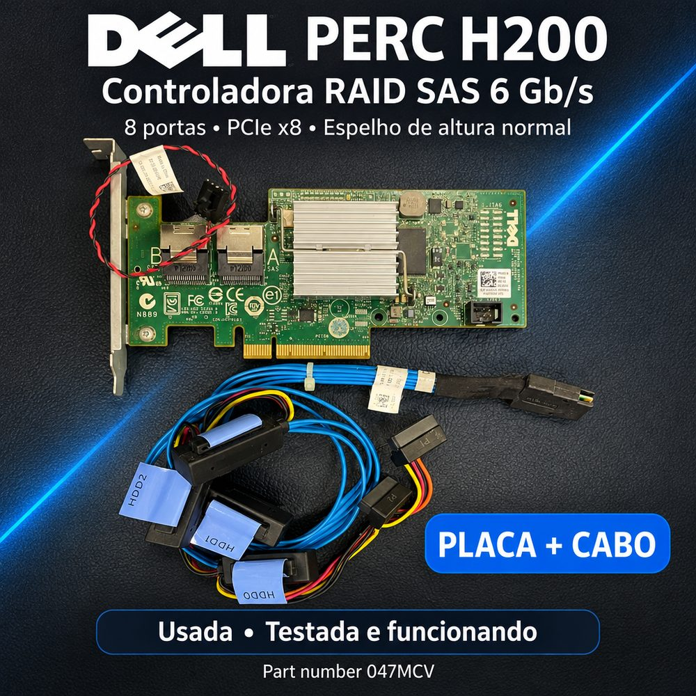

Catálogo / Peças de servidor

Peças de servidor · Usado
Controladora RAID Dell PERC H200 SAS 6Gb 8 Portas PCIe x8 Servidor HBA
R$280A compra, o frete e o pagamento são feitos pela plataforma do anúncio. Somente envio. Confira lá a disponibilidade e o valor atual.
- Marca
- Dell
- Modelo
- PERC H200
- Part number
- 047MCV
- Estado
- Usado
- O que acompanha
- Placa controladora Dell PERC H200 (047MCV)
- Cabo Mini-SAS SFF-8087 para 4 discos SAS/SATA (HDD0 a HDD3), com 2 conectores de energia (P1 e P2)
- Cabo de LED de atividade Dell 09WJK6
- Espelho de altura normal instalado
Descrição
Controladora RAID Dell PERC H200 SAS 6Gb/s com 8 portas internas e encaixe PCIe x8, acompanha cabo Mini-SAS para 4 discos e cabo de LED.
Para que serve
Liga até 8 discos SAS ou SATA, HD ou SSD, a um servidor ou computador com slot PCIe. Monta RAID 0, RAID 1 e RAID 10, ou trabalha como HBA, entregando os discos direto ao sistema. Usa o mesmo controlador da LSI 9211-8i e aceita a troca para o firmware IT, usado em TrueNAS, unRAID e Proxmox com ZFS; a troca do firmware fica por conta do comprador. Boa opção para servidor Dell PowerEdge, NAS caseiro e laboratório.
Especificações
- Modelo: Dell PERC H200 Adapter
- Part number Dell: 047MCV
- Controlador: LSI SAS2008
- Interface: PCIe 2.0 x8
- Conectores: 2x Mini-SAS SFF-8087 internos, 8 portas
- Velocidade: SAS 2.0, até 6Gb/s
- RAID: 0, 1 e 10
- Discos: SAS e SATA, HD e SSD
- Espelho: altura normal (full height)
Itens inclusos
- Placa controladora Dell PERC H200 (047MCV)
- Cabo Mini-SAS SFF-8087 para 4 discos SAS/SATA (HDD0 a HDD3), com 2 conectores de energia (P1 e P2)
- Cabo de LED de atividade Dell 09WJK6
- Espelho de altura normal instalado
Compatibilidade
Retirada de um servidor Dell PowerEdge T110 II, que tem a PERC H200 como opção de fábrica. Encaixe PCIe x8, que também entra em slot PCIe x16. Antes de comprar, confira no manual do seu servidor ou placa-mãe se o slot aceita placa controladora e se há espaço para placa de altura normal.
Estado
Peça usada, retirada de servidor Dell PowerEdge T110 II. Testada e funcionando. As imagens do anúncio mostram a própria peça à venda.
Envio e pagamento
Envio para todo o Brasil pela OLX Entrega, com frete calculado pela OLX. Pagamento pela própria OLX.
Dúvidas
Chame no chat da OLX para tirar dúvidas ou pedir mais fotos.